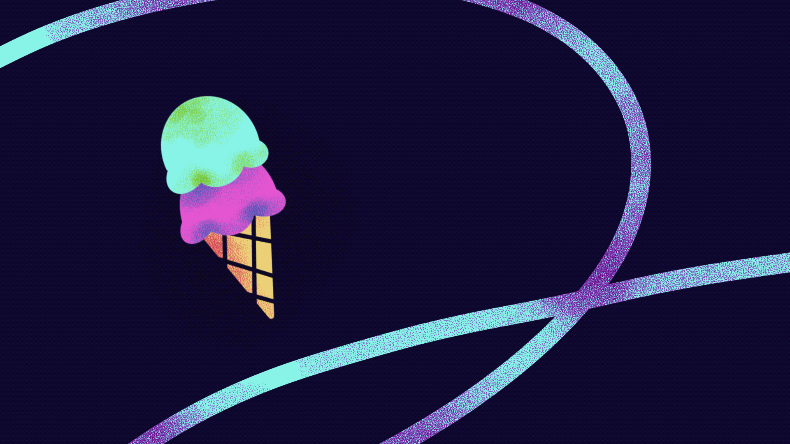

Let's make Homemade
Rainbow Sherbert!

Description
What is Rainbow Sherbert?
Rainbow sherbert is a frozen dessert made from water, sugar, a dairy product like milk or cream, and fruit flavoring.
Any Potential Allergens?
Dairy
How Many Does This Recipe Serve?
About 5 people
How Long Will it Take to Make This Recipe?
Prep Time: 5 hrs
Cooking Time: 1 hr
Ingredients & Equipment
Ingredients
- 1 cup of whole milk
- 1 cup of heavy cream
- 3/4 cup granulated sugar
- 1/8 tsp salt
- 1/2 cup orange juice
- 1/3 cup lime juice
- 6oz fresh raspberries
- orange food coloring
- green food coloring
Equipment
- piping bags
- strainer
- freezer safe containers
- bowls
- cling wrap
- blender
- saucepan
Step 1: Make Bases
Mix Base on Stove & Put in the Fridge!
In a saucepan combine milk, sugar, cream, and salt on medium heat on the stovetop. This is the plain base you will use for all the different flavors in your Rainbow Sherbert.
Then put the mixture in a fridge & freezer safe container and leave in the fridge overnight to chill.